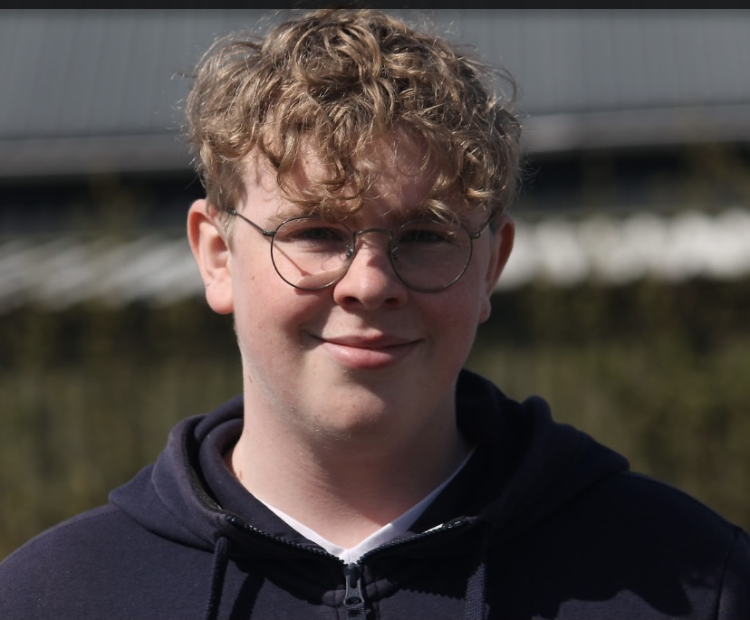
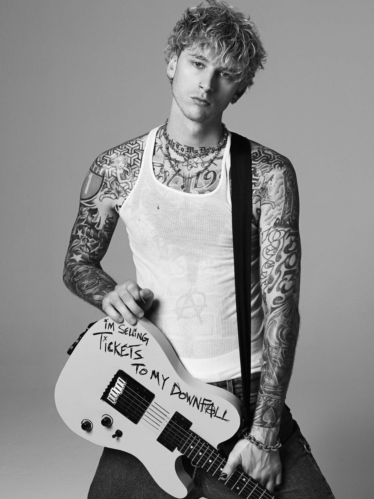

Hi! My name is Valentijn, I'm a 16 year old boy from the Netherlands. My birthday is October 8 Even though I've lived in Middelburg all my life I was born in the ADRZ, which stands for Admiraal de Ruijter Ziekenhuis, in Vlissingen.
After elementry school I went to my high school in Kapelle, so I had to go there by train.
Last year I graduated the HAVO
I built my own pc, I did this with a friend who lived close to me. To this day it's one of my biggest passions to be on my pc and play games. I usally play fps games.
Here is a list of my (currently) favourite games
- Apex legends
- Overwatch
- Valorant

Another one of my passions is music. I listen to all sort of music but my favourite is rock music.
Right now I listen to alot of Machine Gun Kelly's music
Next year the kind Laroi is going to be giving a concert in Amsterdam which I will go to.
